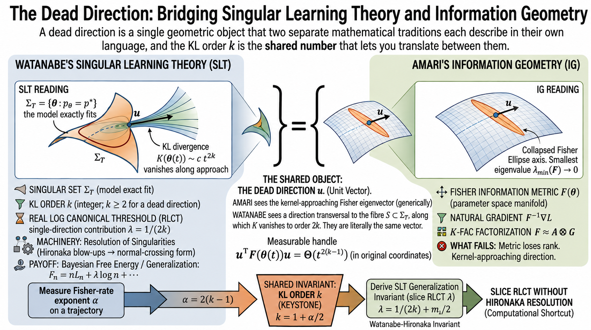

Fourteen of fifty-seven numbered results are machine-checked in Lean 4 against Mathlib at stated scope, the rest at explicit model instances; sources shipped.
Abstract
Singular learning theory and information geometry study the same spaces: the former in resolved coordinates, the latter in original coordinates under a non-degeneracy assumption that overparameterised models violate. This paper carries one direction of the bridge between them, from Watanabe's invariants to Fisher geometry, through one primitive, the dead direction: a unit vector along which the Fisher metric degenerates, equivalently a direction crossing the analytic singular set along which the KL divergence keeps a zero of high order, its KL order set by how fast that divergence vanishes. Our central result recovers the KL order as the decay rate of the directional Fisher quadratic form approaching the singularity, in original coordinates, without a Hironaka resolution. A selection rule on smooth fibres translates this rate into Watanabe's single-direction contribution to the real log canonical threshold, and the recovery extends to multi-component crossings, multiplicity $m$, the singular fluctuation $ν$, prior-RLCT shifts, and tempered posteriors. We then carry the rate into a deep network: a multi-layer K-FAC factorisation writes each Fisher block as a product of activation- and gradient-side rates with a duality between them, instantiated at residual streams, layer normalisation, and attention. A quotient theorem carries the rate to the gauge quotient for optimizers whose update commutes with the group action; Adam's per-coordinate preconditioner fails that condition, so we construct DDCAdam, an equivariant Adam-family preconditioner, and prove the quotient rate along its trajectory. The result is a trajectory-rate readout of Watanabe's triple $(λ, m, ν)$ from one checkpoint's forward and backward passes, without posterior sampling.
Problem
Singular learning theory and information geometry study the same parameter spaces, but information geometry assumes a non-degenerate Fisher metric, and overparameterised models violate that assumption. Reading Watanabe's invariants normally requires a Hironaka resolution, which is intractable for deep networks.
Approach
The paper introduces the dead direction, a unit vector along which the Fisher metric degenerates. It proves that the directional Fisher quadratic form decays as Θ(t^{2(k-1)}), which recovers the KL order k in original coordinates. A selection rule converts this rate into the RLCT contribution 1/(2k). The rate is lifted to deep networks through a multi-layer K-FAC factorisation, extended to residual streams, layer normalisation and attention, and carried to the gauge quotient using an equivariant Adam variant called DDCAdam. Results are machine-checked in Lean 4 with Mathlib, and a script confirms that no declaration uses axioms beyond the standard three or any sorry.

Figure 1 : The dead direction bridges the two traditions: the same unit vector is Amari’s kernel-approaching direction of the Fisher metric F and Watanabe’s higher-order transversal to the singular set \Sigma_{T} , with KL order k the shared invariant. The trajectory Fisher-rate exponent \alpha=2(k-1) , read in original parameter coordinates, recovers k without a Hironaka resolution, and with the
Results
The method reads Watanabe's triple (λ, m, ν) from a single checkpoint's forward and backward passes, without posterior sampling. On a deep-linear reduced-rank regression, it recovers λ̂=0.253±0.004 against a true value of 1/4. Lean checks 14 of 57 results at their stated scope and the other 43 at explicit model instances.